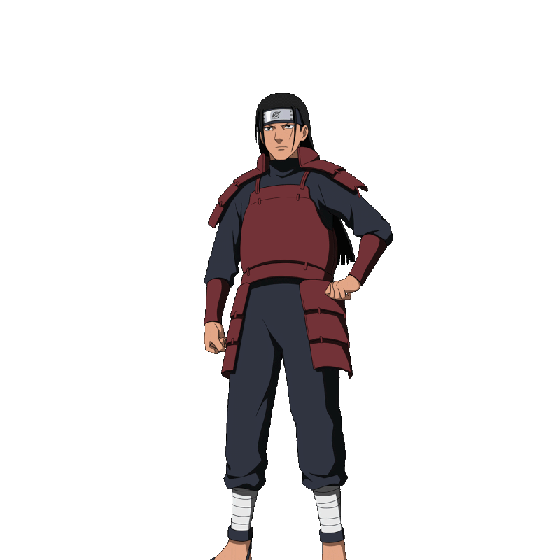
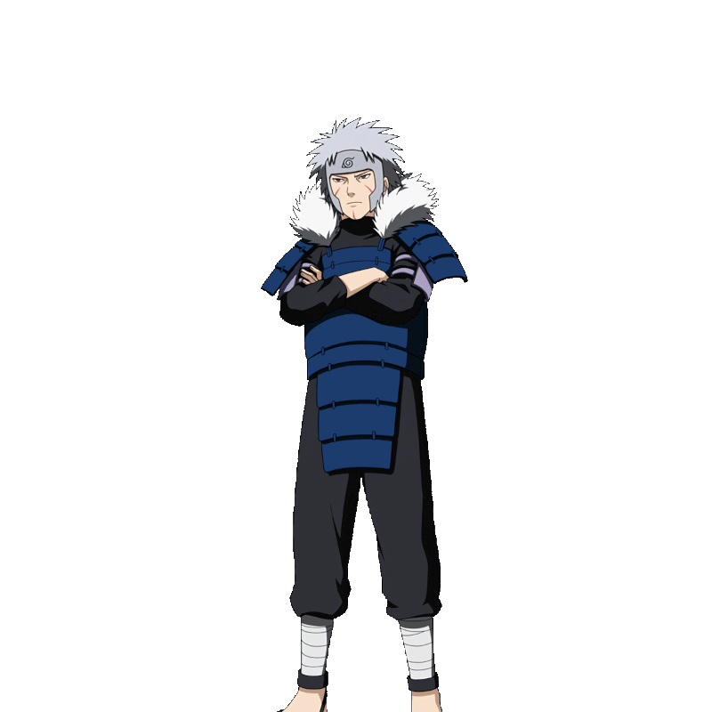
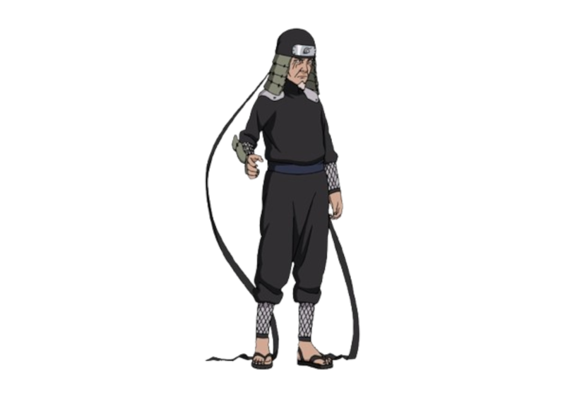
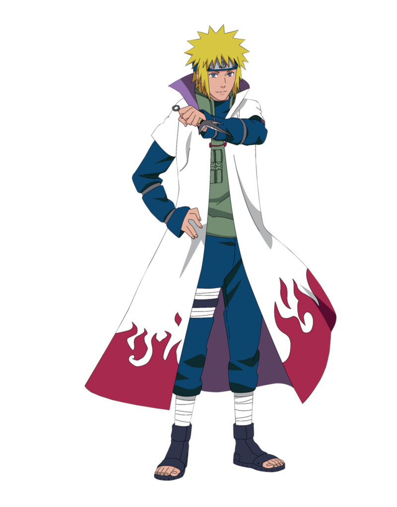
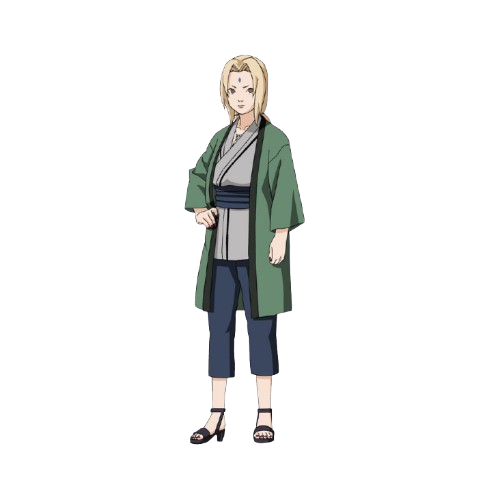
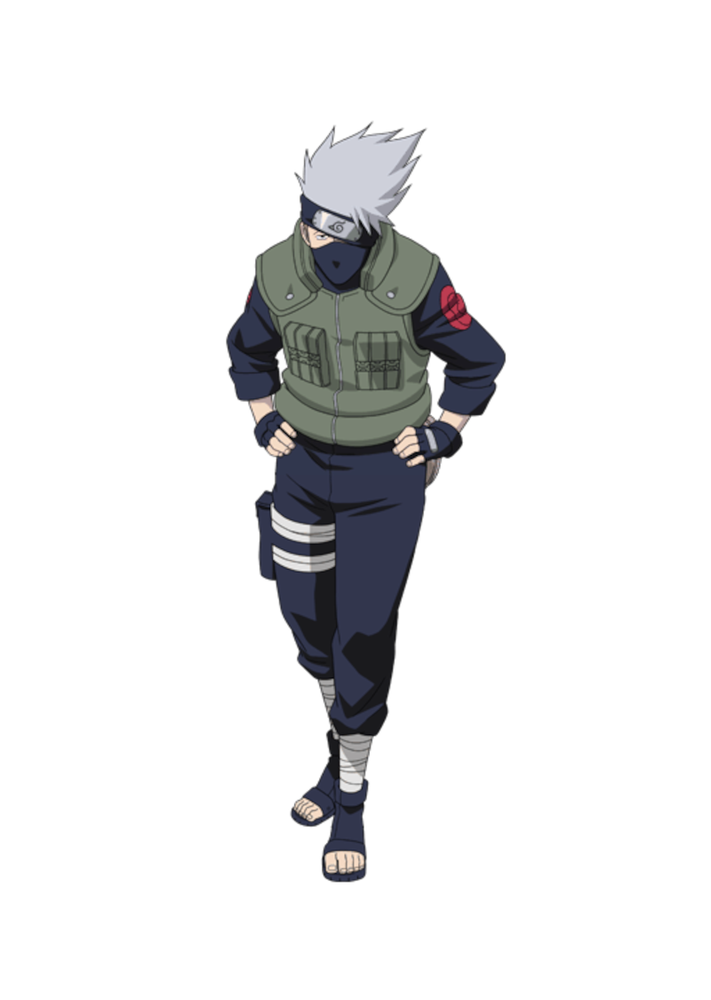
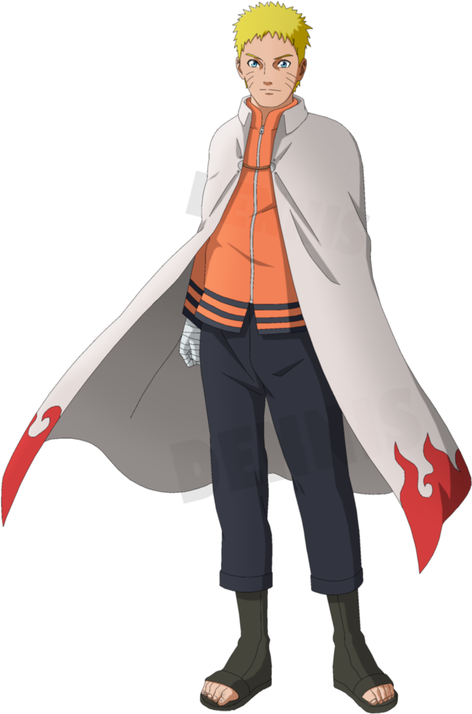

Primeiro Hokage - Hashirama Senju

Hashirama Senju, conhecido como o Primeiro Hokage, foi um dos fundadores da Vila Oculta da Folha (Konohagakure) e é famoso por sua habilidade em controlar a madeira. Ele era um líder carismático e um guerreiro poderoso, que buscava a paz entre as nações ninja.
Segundo Hokage - Tobirama Senju

Tobirama Senju, o Segundo Hokage, era irmão de Hashirama e também um membro do clã Senju. Ele é conhecido por suas habilidades em técnicas de água e por criar várias jutsus importantes, como o Edo Tensei (Reencarnação dos Mortos).
Terceiro Hokage - Hiruzen Sarutobi

Hiruzen Sarutobi, o Terceiro Hokage, foi um dos mais longos governantes da Vila Oculta da Folha. Ele era conhecido por sua sabedoria e habilidade em várias técnicas ninja. Hiruzen desempenhou um papel crucial durante a invasão de Konoha e a guerra ninja.
Quarto Hokage - Minato Namikaze

Minato Namikaze, o Quarto Hokage, também conhecido como "Relâmpago Amarelo de Konoha", era famoso por sua velocidade incrível e pela técnica do Rasengan. Ele sacrificou sua vida para proteger a vila durante o ataque da Raposa de Nove Caudas.
Quinto Hokage - Tsunade Senju

Tsunade Senju, a Quinta Hokage, é neta de Hashirama e é conhecida por suas habilidades médicas excepcionais. Ela é uma das Sannin Lendárias e desempenhou um papel vital na recuperação da vila após a invasão de Orochimaru.
Sexto Hokage - Kakashi Hatake

Kakashi Hatake, o Sexto Hokage, é conhecido por sua habilidade em técnicas de copia e por ser um dos ninjas mais poderosos da vila. Ele desempenhou um papel importante na proteção da vila e na formação de novos shinobis.
Sétimo Hokage - Naruto Uzumaki

Naruto Uzumaki, o Sétimo Hokage, é o protagonista da série e é conhecido por sua determinação inabalável e por ser o jinchuriki da Raposa de Nove Caudas. Ele se tornou um herói para a vila e é um símbolo de esperança para as futuras gerações de shinobis.